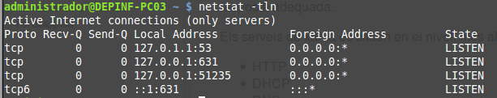

Quan parlem de serveis de xarxa ens referim a aquelles aplicacions que s'executen en segon plànol (background), normalment sense interacció per part de l'usuari, i que estan contínuament esperant (listening) la petició per part d'un client. Una vegada reben una petició s'encarreguen de gestionar la resposta adequada.
L'ordre netstat amb els paràmetres -tln ens mostra els serveis que actualment estan escoltant peticions per TCP.
Serveis esperant peticions per TCP

Serveis esperant peticions per TCP
Els serveis de xarxa és situen en el nivell més alt de l'estructura de capes, el d'aplicació. Algunes dels serveis més significatius són:
- HTTP
- DHCP
- DNS
- FTP
- SMTP
- SSH
- POP
- IMAP